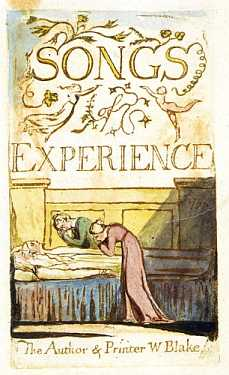

General Bibliography
Basic Reference Works
Standard and Useful Editions
General Studies: Literary, Historical, and Biographical
General Studies: Art Historical
Specific Bibliographies
Color-Printed Drawings
Commercial Book Illustrations
Drawings, Watercolors, and Paintings
Illuminated Books
Manuscripts
Separate Plates
Typographic Works
Works by Blake's Circle

Blake Archive Homepage


 Blake
Archive Homepage
Blake
Archive Homepage